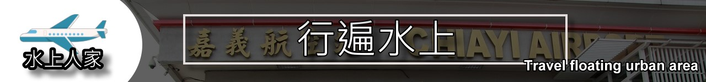

水上雨豆樹 |
|
很用心的店家！ 環境舒適餐點特別！ 丹麥裡的豬排有香料的味道，好吃！ 炸豬排搭配番茄醬，美味！ 胖薯很紮實，吃得到馬鈴薯香！ 還有提供小餅乾跟熱麥茶，貼心！裝潢擺設都很復古風格，小姐的服務非常親切。這裡的飲品喝完杯子還可以帶走。這裡下午茶如果只喝飲料還可以吃免費小點心哦！ 資料來源：ＧＯＯＬＥ評論 |
 |
白人牙膏 |
|
白人牙膏由嘉聯實業於西元1988年成立，生產牙膏、牙刷、牙粉急速口水等全系列口腔清潔用品，園區占地遼闊，放置許多可愛的白人牙膏吉祥物供民眾合照，並將建於大清光緒年間，是清朝金德恒將軍府第，至今已有一百三十餘年之歷史，遠渡從江西省原址，聘請當地師傅，將整座將軍虎拆卸，編號裝櫃運回台灣，在請原批當地師傅來台灣組裝成現樣貌，以供國人觀賞，並維護古蹟。 資料來源：維基百科 |
 |
水上機場 |
|
嘉義機場（IATA代碼：CYI；ICAO代碼：RCKU）是一座位於臺灣嘉義縣水上鄉的機場，俗稱嘉義水上機場，簡稱水上機場，為軍民合用機場。民用部分的管轄單位為中華民國交通部民用航空局嘉義航空站，軍用部分則為中華民國空軍嘉義基地，駐紮有空軍第四戰術戰鬥機聯隊（前第455戰術戰鬥機聯隊），也曾是駐台美軍的軍用機場。空軍基地位於嘉義縣水上鄉、太保市與嘉義市交界，航空站出口位於嘉義縣水上鄉，距離嘉義市大約有8公里，距離中山高速公路水上交流道有7.50公里。 資料來源：維基百科 |
 |
